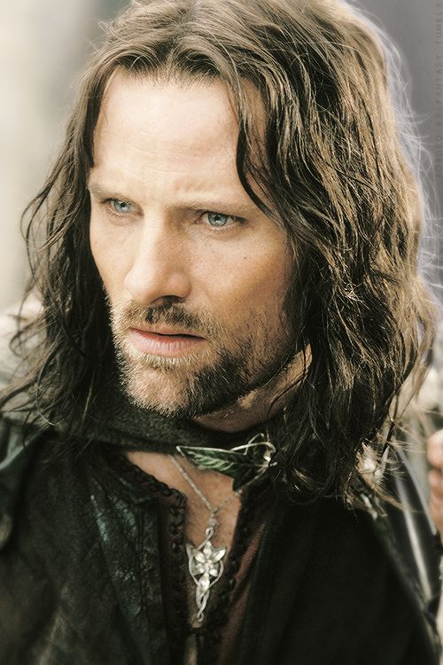

The Fellowship of the Ring
The hobbits first meet Strider, the mysterious ranger of the north, in the Prancing Pony tavern in Bree. Strider hides them from the Nazgul that are hunting them and escorts them to elven city of Rivendell. Here Aragorn becomes one of the nine companions that are known as the fellowship of the ring.
The Two Towers
During this film Aragorn is tracking Merry and Pippin as the Uruk-Hai are taking them to Isengard. Aragorn its interrupted when he meets the Rohirim and beings the quest of repairing Rohan. Aragorn helps lead the defense of Helms Deep from Isengard's invasion.
Return of the King
Aragorn convinces Rohan to aid Gondor as the siege of Minas Tirith commences. He travels the Path of the Dead and summons them for the war as he promises to hold their othes fulfilled. Minis Tirith is reclaimed and at the end Aragorn is crowned king.
